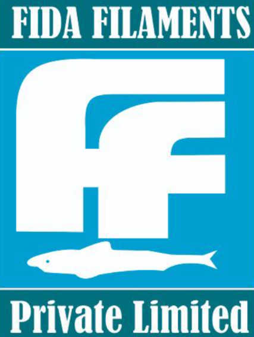
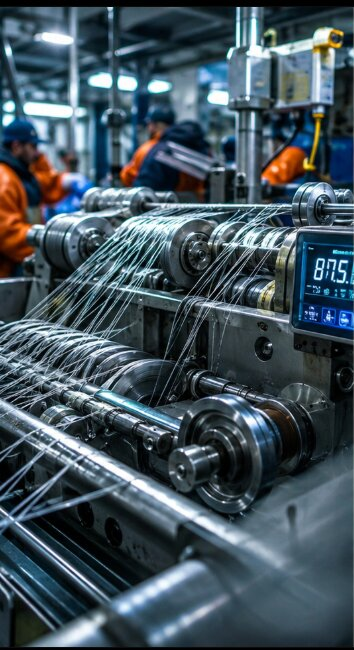

Material Selection
Polymer chosen to match the intended application — fishing, industrial, agricultural or decorative.

FIDA FILAMENTSPrivate LimitedQUALITY & CERTIFICATIONS
FIDA’s manufacturing mindset is built around material consistency, purposeful controls and the confidence to customise for real-world use.

Every production decision is made with end-use performance in mind—from polymer selection to construction, packaging and delivery, across all available sizes.
OUR PROCESS
Polymer chosen to match the intended application — fishing, industrial, agricultural or decorative.

Filament drawn to exact diameter in every available size, with continuous in-line checks.

Winding, hank preparation and packaging carried out to buyer specification before dispatch.
SERVICE STANDARD
Whether an order is delivered within India or exported across Asia, FIDA holds every batch to the same production discipline and documentation standard.
APPROVED DOCUMENTS
Upload approved certificates through the CMS when available.